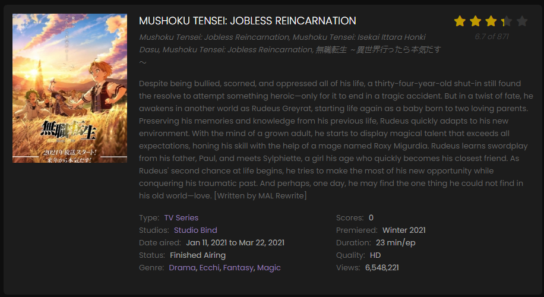
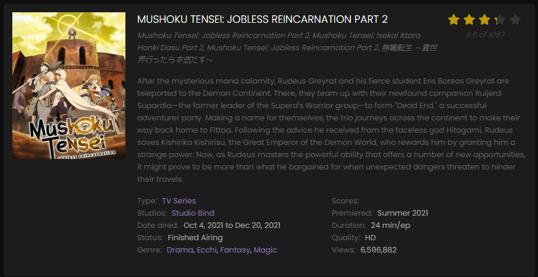
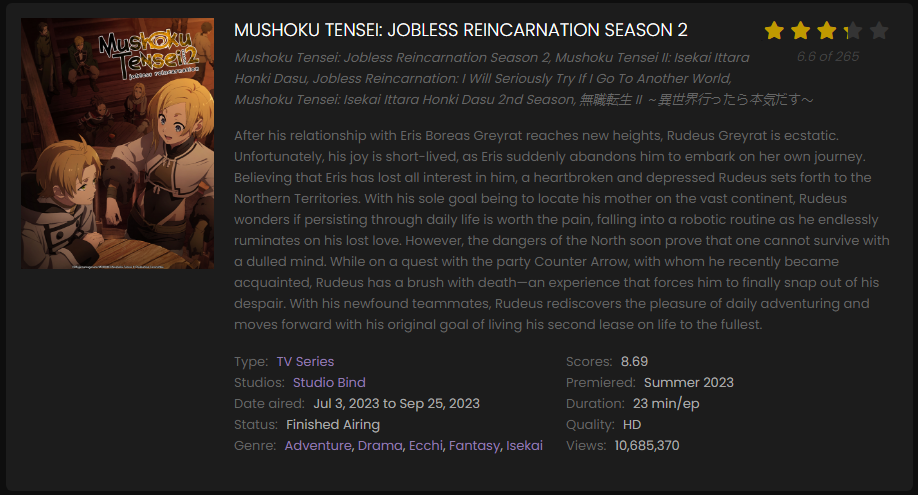
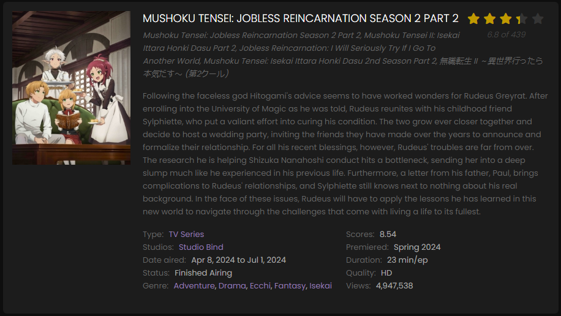
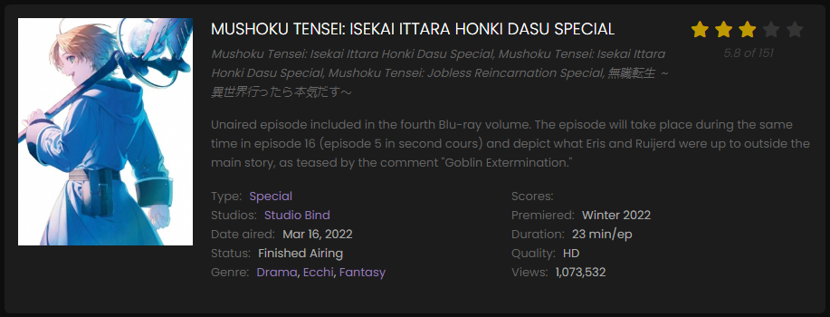
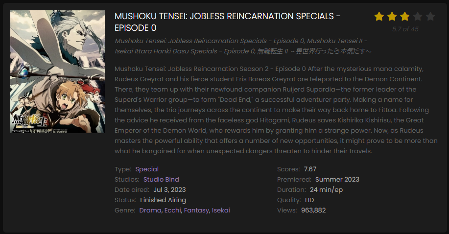
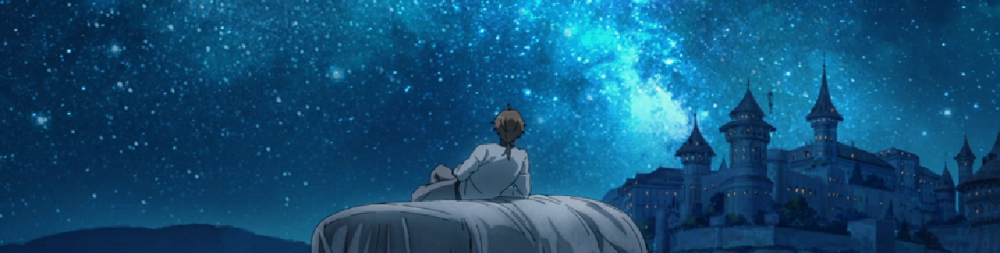

MUSHOKU TENSEI: JOBLESS REINCARNATION 2nd SEASON


MUSHOKU TENSEI: JOBLESS REINCARNATION MOVIES



Thoughts
Personally, I think that the rest of the seasons should be released soon because after too long people might forget about it if another amazing anime releases.
Anyways this anime REALY shows the strugle of a not so good looking person in our recist world.But this kid is something else, irrespective of his age he faced hardships and didn't lose hope.
This much compassion is admirable.So yeah, these were my thoughts about this masterpiece.
| Credits | Contacts | |
|---|---|---|
| CREATED BY: JAFFER HUSSAIN | Gmail:animepage@gmail.com | |
| EDITOR: JAFFER HUSSAIN | Instagram:anime_page | |
.png) |